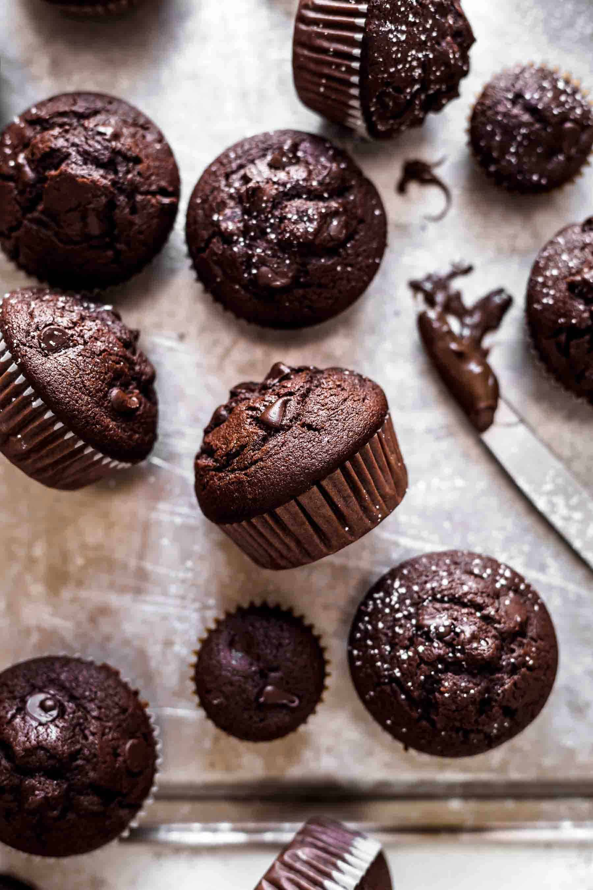

Chocolate Muffins

Description
Delicious and easy-to-make chocolate muffins with chocolate chunks.
Ingredients
- 220g all purpose flour
- 100g regular sugar
- 130ml oil
- 170ml unflavored kefir
- 2 eggs
- 2 tablespoons cocoa powder
- 100g dark chocolate
- 2 teaspoons baking powder
Steps
- Turn on the oven and put it on 200 degrees Celsius.
- Cut the chocolate into small pieces.
- Put all of the ingredients into a bowl and mix it well together.
- The final mixture should be thick but still runny.
- Put the dough into muffin tray.
- Bake for 30 minutes and then take it out.